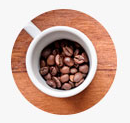
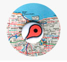

Cafés super selecionados e com muito mais sabor
Escolha o seu café
Hoje em dia, café bom não é só aquele feito no coador de pano que nossas avós faziam - um novo mundo se abre para nós em matéria de tipos de grãos, procedência, tipos de torras e jeitos de preparar a bebida, que é tão popular na mesa dos brasileiros.
Onde encontrar as lojas
Rua São José, 90, Centro - RJ